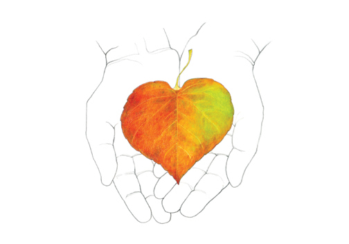
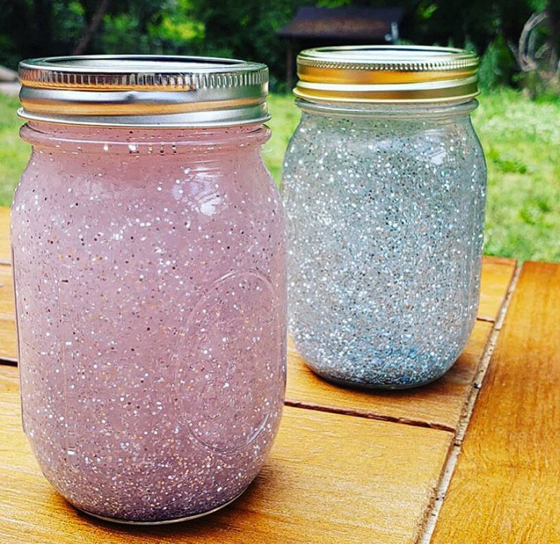
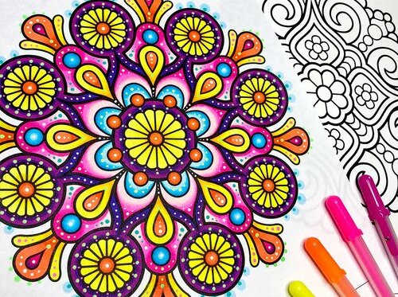
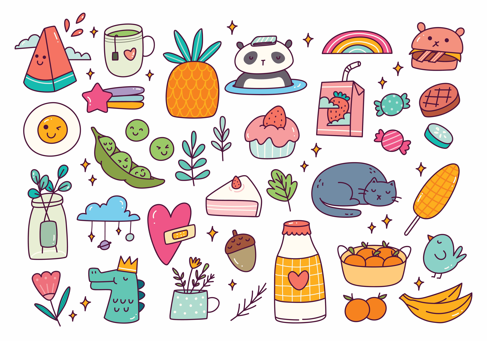

Anxiety disorders are the most common mental health disorder in the United States, and anywhere from 1 in 10 to 1 in 13 people suffer from anxiety, with about 8% of children and teenagers experiencing an anxiety disorder. CalmConnect is hear to help! This page will guide you through activities to counteract your stress.
Arts and crafts provide a relaxing and focused activity that can help reduce stress, anxiety, and negative thoughts, while also boosting self-esteem. Arts and crafts is also a form of self-expression.
Focus on drawing on anything you are grateful for. Choose a journal or app, set a daily or weekly schedule, write down specific things you're grateful for, reflect on why you're grateful for each item, and revisit past entries for inspiration. Drawing can be a powerful way to enhance your appreciation of life and the world.
Focus on capturing the WHY of this special moment of gratitude and not getting wrapped up in the little details. Work quick, don’t stay in one place for too long, bounce around the paper, keep telling yourself this is a mindfulness meets art making exercise and how I feel is all that matters.
A quiet visual experience whenever you need a calming moment. Encourage yourself to focus on the glittering contents as it settles down, and it invites you to allow that calming feeling to flow through your body, as you watch the glitter swirl and then settle. You can use a calm down jar to help reduce stress and anxiety.
Mandala coloring is a therapeutic art form that involves coloring symmetrical, geometric patterns within a circular outline. Use color pencils or crayons are good for mandalas because they offer a lot of control.
Doodling can help reduce stress by activating the relaxation response and calming the amygdala, the part of the brain that controls the fight-or-flight response. The repetitive motion of drawing can also help you feel calm and reduce the stress hormone cortisol.
Meditation is a practice that involves focusing or clearing your mind using a combination of mental and physical techniques. Depending on the type of meditation you choose, you can meditate to relax, reduce anxiety and stress, and more. Some people even use meditation to help them improve their health, such as using it to help adapt to the challenges of quitting tobacco products.
Body Centered meditation helps pay attention to parts of the body and bodily sensations in a gradual sequence from feet to head. This method can help people become more aware of their physical sensations, emotions, and feelings.
Movement meditation is good for people who find peace in action and want to develop body awareness.
In mindfulness meditation, you pay attention to your thoughts as they pass through your mind. You don’t judge the thoughts or become involved with them. You simply observe and take note of any patterns..
Exercise.
Music.
Reading